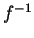

Run-time type information in CORBA is managed by the ORB's Interface Repository (IR) component. It allows to request, inspect and modify IDL type information dynamically, e.g., to find out which operations an object supports. Some ORBs may also need the IR to find out whether a given object's type is a subtype of another, but most ORBs can do without the IR by encoding this kind of type information in the helper classes generated by the IDL compiler.
In essence, the IR is just another remotely accessible CORBA object that offers operations to retrieve (and in theory also modify) type information. Note that the JacORB IR is only available if you are using JDK 1.2 or above.
The IR manages type information in a hierarchical containment structure that corresponds to the structure of scoping constructs in IDL specifications: modules contain definitions of interfaces, structures, constants etc. Interfaces in turn contain definitions of exceptions, operations, attributes and constants. Figure 7.1 illustrates this hierarchy.
The descriptions inside the IR can be identified in different ways. Every element of the repository has a unique, qualified name which corresponds to the structure of name scopes in the IDL specification. An interface I1 which was declared inside module M2 which in turn was declared inside module M1 thus has a qualified name M1::M2::I1. The IR also provides another, much more flexible way of naming IDL constructs using Repository Ids. There are a number of different formats for RepositoryIds but every Repository must be able to handle the following format, which is marked by the prefix "IDL:" and also carries a suffix with a version number, as in, e.g., " IDL:jacorb/demo/grid:1.0". The name component between the colons can be set freely using the IDL compiler directives #pragma prefix and #pragma ID. If no such directive is used, it corresponds to the qualified name as above.
When designing the Interface Repository, our goal was to exploit the Java reflection API's functionality to avoid having to implement an additional data base for IDL type descriptions. An alternative design is to use the IR as a back-end to the IDL compiler, but we did not want to introduce such a dependency and preferred to a have a rather ``light-weight'' repository server. As it turned out, this design was possible because the similarities between the Java and CORBA object models allow us to derive the required IDL information at run time. As a consequence, we can even do without any IDL at compile time. In addition to this simplification, the main advantage of our approach lies in avoiding redundant data and possible inconsistencies between persistent IDL descriptions and their Java representations, because Java classes have to be generated and stored anyway.
Thus, the Repository has to load Java classes, interpret them using reflection and translate them into the appropriate IDL meta information. To this end, the repository realizes a reverse mapping from Java to IDL. Figure 7.2 illustrates this functionality, where  denotes the reverse mapping, or the inverse of the language mapping.
For the ORB to be able to contact the IR, the IR server process must be running. To start it, simply type the ir command and provide the required arguments:
$ ir /home/brose/classes /home/brose/public_html/IR_Ref
The first argument is a path to a directory containing .class files and packages. The IR loads these classes and tries to interpret them as IDL compiler-generated classes. If it succeeds, it creates internal representations of the adequate IDL constructs. The second argument on the command line above is simply the name of the file where the IR stores its object reference for ORB bootstrapping.
To view the contents of the repository, you can use the GUI IRBrowser tool or the query command. First, let's query the IR for a particular repository ID. JacORB provides the command qir (``query IR'') for this purpose:
$ qir IDL:raccoon/test/cyberchair/Paper:1.0
As result, the IR returns an InterfaceDef object, and qir parses this and prints out:
interface Paper
{
void read(out string arg_0);
raccoon::test::cyberchair::Review getReview(in long arg_0);
raccoon::test::cyberchair::Review submitReview(
in string arg_0, in long a rg_1);
void listReviews(out string arg_0);
};
To start the IRBrowser, simply type
$ irbrowser
Figure 7.3 gives a screen shot of the IR browser.
The Java classes generated by the IDL compiler using the standard OMG IDL/Java language mapping do not contain enough information to rebuild all of the information contained in the original IDL file. For example, determining whether an attribute in an interface was readonly or not is not possible, or telling the difference between in and inout parameter passing modes. Moreover, IDL modules are not explicitly represented in Java, so telling whether a directory in the class path represents an IDL module is not easily possible. For these reasons, the JacORB IDL compiler generates a few additional classes that hold the required extra information if the compiler switch -ir is used when compiling IDL files:
$ idl -ir myIdlFile.idl
The additional files generated by the compiler are:
If no .class files that are compiled from these extra classes are found in the class path passed to the IR server process, the IR will not be able to derive any representations. Note that the IDL compiler does not make any non-compliant modifications to any of the standard files that are defined in the Java language mapping -- there is only additional information.
One more caveat about these extra classes: The compiler generates the _XModule.java class only for genuine modules. Java package scopes created by applying the -d switch to the IDL compiler do not represent proper modules and thus do not generate this class. Thus, the contents of these directories will not be considered by the IR.
When an object's client calls the get_interface() operation, the ORB consults the IR and returns an InterfaceDef object that describes the object's interface. Using InterfaceDef operations on this description object, further description objects can be obtained, such as descriptions for operations or attributes of the interface under consideration.
The IR can also be called like any other CORBA object and provides lookup() or lookup_name() operations to clients so that definitions can be searched for, given a qualified name. Moreover, the complete contents of individual containers (modules or interfaces) can be listed.
Interface Repository meta objects provide further description operations. For a given InterfaceDef object, we can inspect the different meta objects contained in this object (e.g., OperationDef objects). It is also possible to obtain descriptions in form of a simple structure of type InterfaceDescription or FullInterfaceDescription. Since structures are passed by value and a FullInterfaceDescription fully provides all contained descriptions, no further --possibly remote -- invocations are necessary for searching the structure.